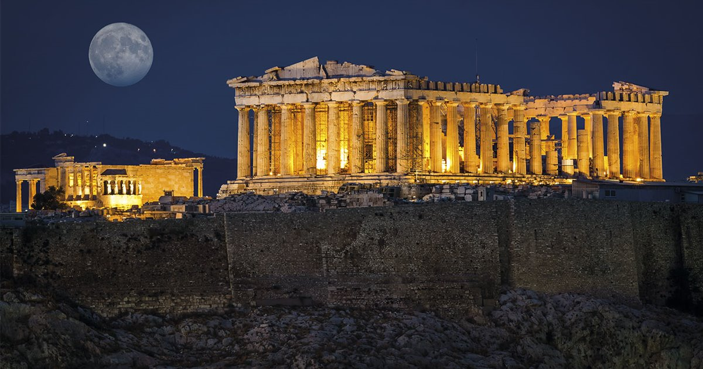
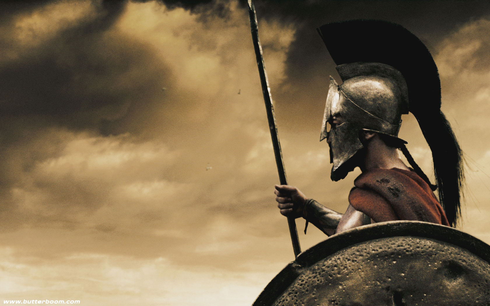
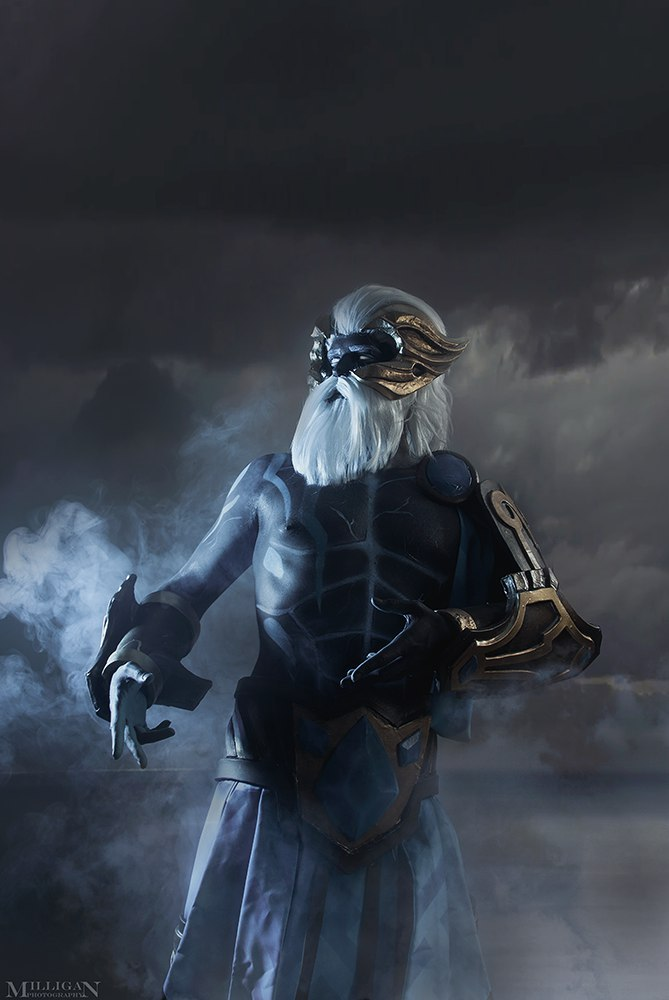
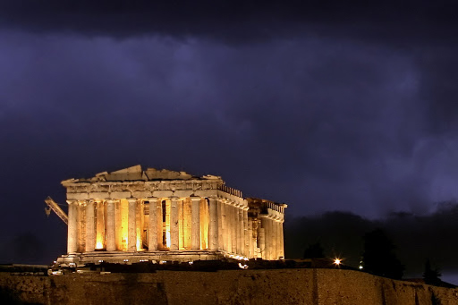
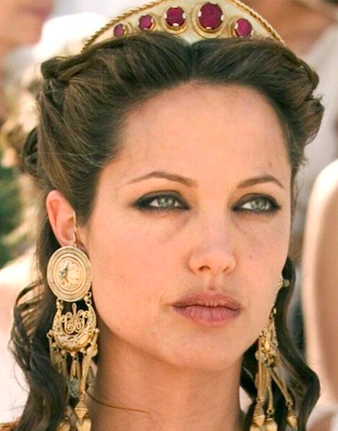
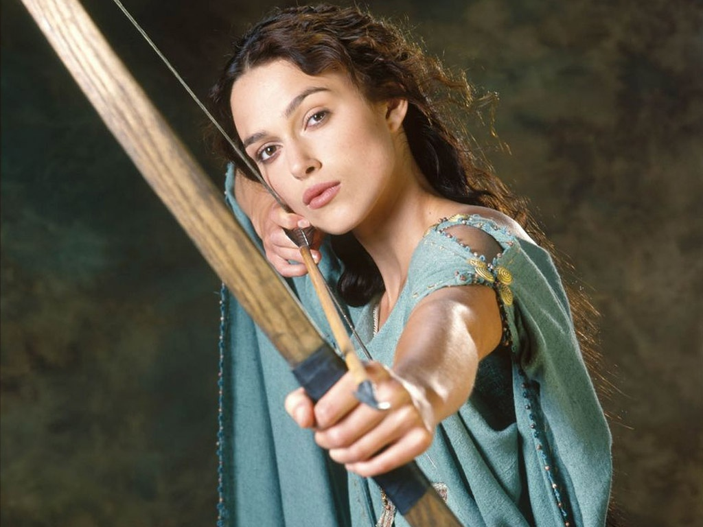
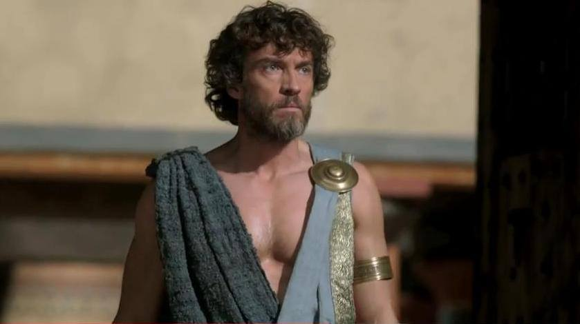
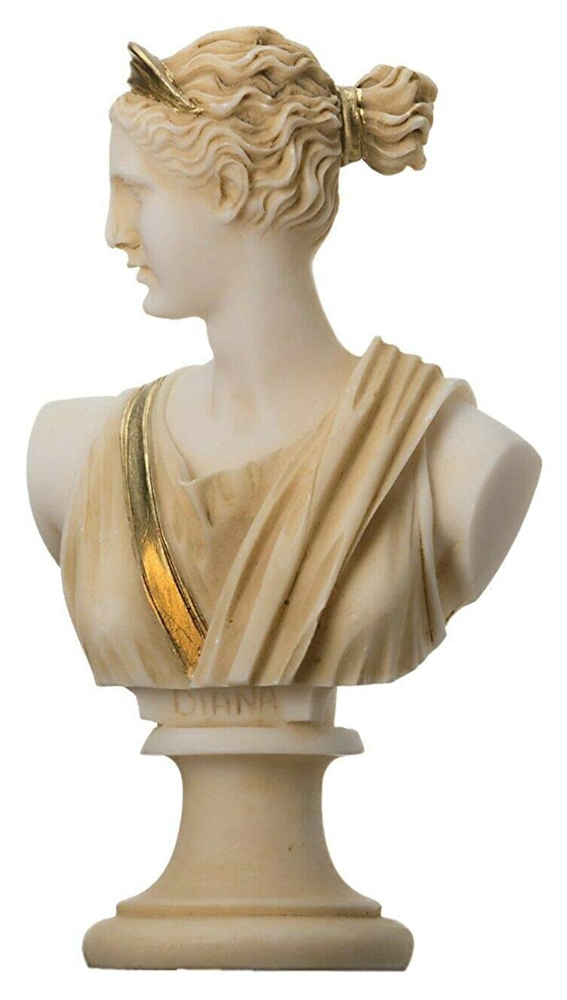
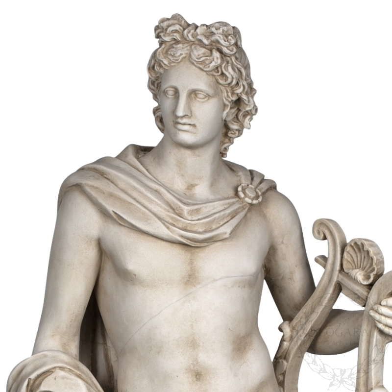

Mitología Griega
Por Maldonado Gonzalez Fernando Artemio y Varela Calderón Emmanuel
Partenón
El Partenón es uno de los más bellos edificios que ha construido el hombre y el más importante ejemplo de la arquitectura de la Antigua Grecia. Aunque actualmente se encuentra en ruinas, todavía conserva una belleza que nos hace pensar en cómo sería en su época de esplendor.
Antes
Después
Ares
En la mitología griega, Ares es hijo de Zeus y Hera, el dios olímpico de la guerra. En la guerra representa la brutalidad, la violencia, y horrores de las batallas. Como dios de la virilidad masculina, a lo largo de la mitología se han contabilizado una treintena de amantes mujeres, con una descendencia de alrededor de 60 hijos.
Antes
Después
Poseidon
Es el dios de los mares y, como «Agitador de la Tierra», de los terremotos en la mitología griega. Poseidón era un importante dios municipal de varias ciudades: en Atenas, era el segundo en importancia por detrás solo de Atenea, mientras en Corinto y en muchas ciudades de la Magna Grecia era el dios jefe de la polis.
Antes
Después
Zeus
En la mitología griega, Zeus es una divinidad a la que se denomina a veces con el título de «padre de los dioses y los hombres», que gobierna a los dioses del Olimpo como un padre a una familia.
Antes
Después
Es el rey de los dioses y supervisa el universo. Es el dios del cielo y el trueno y por ende de la energía. Entre sus atributos se incluyen el cetro y la corona (como símbolos de su poder), el rayo, el águila, el toro y el roble.
Antes
Después
Hera
Hera fue conocida por su naturaleza violenta y vengativa, principalmente contra las amantes y la descendencia de Zeus, pero también contra los mortales con los que se cruzaba.
Antes
Después
Artemis
Es la diosa helena de la caza, los animales salvajes, el terreno virgen, los nacimientos, la virginidad y las doncellas, que traía y aliviaba las enfermedades de las mujeres.
Antes
Después
Holisa
Holisa En la mitología griega, Holisa es una diosa de la fertilidad de los humanos y de los frutos. También es conocida como la diosa de los ojos verdes.
Antes
Después
Perséfone
Es la diosa griega de la primavera, las flores, las estaciones y la fertilidad, hija de Zeus y Deméter. Está casada con Hades, quién la raptó y la convirtió en reina del Inframundo contra su voluntad.
Antes
Después
Afrodita
Afrodita es, en la mitología griega, la diosa de la belleza, la sensualidad y el amor. Aunque a menudo se alude a ella en la cultura moderna como «la diosa del amor», es importante señalar que antiguamente no se refería al amor en el sentido romántico sino erótico.
Antes
Después
Hades
En la mitología griega, Hades (el invisible), el dios del inframundo, el reino invisible al que los muertos van tras dejar el mundo, así como todas las cosas bajo tierra.
Antes
Después
Cronos
Crono ha sido refundido con el nombre de Chronos, la personificación del tiempo en la antigüedad clásica. En el Renacimiento, la combinación de Crono y Chronos dio origen a «Padre Tiempo» que blande una guadaña para cosechar.
Antes
Después
Atenea
Atenea, la hija favorita de Zeus y la protectora de Atenas. Diosa del conocimiento, la sabiduría, la guerra justa, la ley y la justicia. Las diosas y dioses griegos de mayor importancia y poder en la mitología grecorromana.
Antes
Después
Icaro
Es hijo del arquitecto Dédalo, constructor del laberinto de Creta, y de una esclava llamada Náucrate. Conocido por quemar sus alas al intentar escapar de Minos, quien resguardaba el laberinto.
Antes
Después
Apolo
El que nunca muere. Apolo ha sido reconocido variadamente como dios de la luz y el sol, la verdad y la profecía, el tiro con arco, la medicina y la curación, la música, la poesía y las artes, etc.
Antes
Después
Hebe
Era la personificación de la juventud, descrita como hija de Zeus y Hera. Según la Ilíada Hebe era la asistente de los dioses: llenaba sus copas con néctar, ayudaba a Hera a enganchar los caballos a su carro y bañaba y vestía a su hermano Ares.
Antes
Después
Eros
Es el dios primordial responsable de la atracción sexual, el amor venerado también como un dios de la fertilidad. También es conocido como el dios del amor.
Antes
Después
Hermes
Es el dios olímpico mensajero, de las fronteras y los viajeros que las cruzan, del ingenio y del comercio en general, de la astucia, de los ladrones y los mentirosos, y el que guía las almas al inframundo, al Hades.
Antes
Después

Impacto
A pesar de haber pasado muchísimos siglos, numerosos aspectos de la cultura griega han pervivido hasta la actualidad. Uno de ellos es la mitología. El carácter trágico de los mitos les regala el don de la eternidad.
Uno de los campos en los que es notorio el influjo de lo griego es el del entretenimiento. Aquí, ramas del ocio como el cine se han beneficiado y han instrumentalizado a las figuras de la mitología griega.